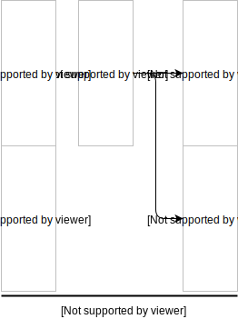
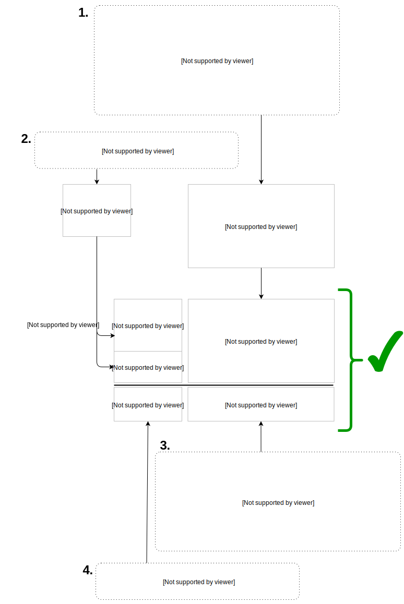

Extract Mapping¶
The extract process follows the following basic pattern:
- Read file data into a table with headers.
- Look at some subset of data from that table.
- Apply some transformation to the subset.
- Write the result to one or more output columns adhering to the principle of composing a series of simple and unambiguous factual statements.
Each iteration of this cycle is called a mapping operation.
Note
Mapping operations share common input parameters m, in_col, and
out_col.
in_col: The name or numerical index of the column in the input data file.
out_col: The name of the standard concept to use for the output column in
the DataFrame containing extracted data.
m: The magic. Depending on the mapping operation, this will be a dict,
function, or constant value.
Mapping Operations¶
Keep Map¶
def keep_map(in_col, out_col):
The keep_map operation copies all of the values from in_col to
out_col without modifying the values.
keep_map is a special case of value_map with m=lambda x: x.
Constant Map¶
def constant_map(m, out_col):
The constant_map operation writes N iterations of constant value m
to out_col, where N is the number of rows in the source data table.
constant_map is a special case of value_map with m=lambda x: <some
constant>.
Value Map¶
def value_map(m, in_col, out_col):
The value_map operation takes values from in_col,
performs some transformation m on them, and then writes the
result to out_col in your result dataframe.
m can be a function, dict, or regex pattern string:
- If it’s a function, the returned column values will be the result of applying
that function to each value in
in_col. - If it’s a dict, each key is a regex pattern string, and each value is either
a direct replacement or a function applied to values in
in_colmatching the pattern. - If it’s a regex pattern string, the result is the same as if it had been
{m: lambda x: x}.
Note
- Regex patterns without
^and$anchors will have them automatically added. mdict regex pattern matchess are checked in order, and values fromin_colare each only matched once, so{'a': 'b', 'b': 'c'}will never convert ‘a’ into ‘c’.- If a regex pattern includes capture groups, the receiving function will receive only the captures instead of the whole cell value.
Row Map¶
def row_map(m, out_col):
The row_map operation lets you build a single output column using data from
across entire rows of source data when your output column needs to combine data
from multiple cells in the row. m is a function that takes an entire row as
input and returns a single value using values from that row.
Column Map¶
def column_map(m, in_col, out_col):
The column_map operation lets you pass an entire column of data into a
custom function m which returns a new column (of the same length) as the
result.
Note
Needing to use column_map is a sign that the original data is
poorly constructed.
Melt Map¶
def melt_map(var_name, map_for_vars, value_name, map_for_values):
The melt_map operation combines the pandas melt function and the
value_map operation. It both reshapes data and maps values.
var_nameis the melt’s resulting var column name.map_for_varsis a dict with keys equal to column names or numeric indices from the source data and values equal to replacement var names.value_nameis the melt’s resulting value column name.map_for_valuesis the same asvalue_map’sm.
Note
Any use of melt_map can be replaced by multiple uses of value_map
with appropriate column stacking.
DF Map¶
def df_map(m):
The df_map operation is for when you just can’t figure out how to do what
you want to do with the other predefined operations. Take a whole DataFrame,
perform some function m on it, and return a new DataFrame of the same size.
Note
Needing to use df_map is a sign that the original data is poorly
constructed.
Important Strategic Details¶
Avoid Hard-coded Strings¶
Avoid using hard-coded strings for output column headers and values. As much as
possible, favor variables in common.constants for cell values and variables
in common.concept_schema.CONCEPT for out_col assignment. That way
everyone has the chance to use the same shared set of values.
Repeated Information¶
Multiple identical declarations don’t add new information and therefore don’t matter. They also don’t hurt anything. This table means exactly the same thing as if it had only one row:
| Participant ID | Specimen ID | Participant Age | Participant Sex | Participant Race |
|---|---|---|---|---|
| P1 | S1 | 7 | m | unknown |
| P1 | S1 | 7 | m | unknown |
You Don’t Need To Extract The Whole Document All At Once¶
If creating multiple extraction configurations for a single source data file to generate multiple smaller tables during Extract that can be manipulated in a Transform function is easier for you than making one complex table for the whole data file, then do it. If not, that’s fine too.
Parallel Column Stacking¶
If the same out_col is used multiple times, the column output from
successive operations will be vertically concatenated.

Length Rectification¶
The length disparity between output columns produced by Parallel Column Stacking is then rectified by least-common-multiple repetition of output columns which gives a final result that preserves row colinearity from the original source data. Note in the next image that A is inline with A, B is inline with B, etc.
Caution
The lengths of all output columns must be multiples of the original source data length. If they aren’t, the library will raise an exception.
Splitting Cells¶
Sometimes you will have source documents that lump multiple distinct values into the same table cell. For instance, study participants might have multiple specimens reported together as follows:
| Participant | Specimens |
|---|---|
| P1 | SP1a/SP1b |
| P2 | SP2 |
| P3 | SP3a/SP3b/SP3c |
Because of the practical implications of the Value Principles,
you will want to have independent associations (P1, SP1a), (P1, SP1b), etc, so
you need to separate the “/”-delimited specimen values into separate entries.
Replacing each of the Specimens cells with the appropriate Split object
will tell the Extract Stage to do the right thing.
The Split Object¶
The Split object (common.pandas_utils.Split) is instantiated with a
list of values and optionally a group ID. After all of the extract mapping
operations are finished, any Split objects found in your output will trigger a
“split” of the row into multiple rows with identical non-Split cells and each
with a different value from among the Split members.
For instance, from:
| A | B | C |
|---|---|---|
| Split([1, 2, 3]) | Split([4, 5, 6]) | 7 |
to:
| A | B | C |
|---|---|---|
| 1 | 4 | 7 |
| 1 | 5 | 7 |
| 1 | 6 | 7 |
| 2 | 4 | 7 |
| 2 | 5 | 7 |
| 2 | 6 | 7 |
| 3 | 4 | 7 |
| 3 | 5 | 7 |
| 3 | 6 | 7 |
Without groups, multiple Splits on the same row will multiply to produce the cartesian product of the values in those Splits. However, if Splits are assigned a group value, then Splits on the same row in the same group will be linked to each other so that they do not form a cartesian product with each other.
| A | B | C |
|---|---|---|
| Split([8, 9], group=1) | Split([10, 11, 12], group=1) | 13 |
to:
| A | B | C |
|---|---|---|
| 8 | 10 | 13 |
| 9 | 11 | 13 |
| None | 12 | 13 |
And if you combine both of these forms together, you go from:
| A | B | C |
|---|---|---|
| Split([1, 2], group=1) | Split([3, 4, 5], group=1) | Split([6, 7]) |
to:
| A | B | C |
|---|---|---|
| 1 | 3 | 6 |
| 2 | 4 | 6 |
| None | 5 | 6 |
| 1 | 3 | 7 |
| 2 | 4 | 7 |
| None | 5 | 7 |
Going back to the participants and specimens example, you might use a Split
object as part of a value_map operation (mapping operations are described
below) like this:
value_map(
in_col='Specimens',
out_col='<example_output_col>',
m=lambda x: Split(x.split('/'))
)
Note
Interpretation of Split objects happens after all the mapping
operations are complete, so the newly created rows will not be affected by
the length-multiple restriction cautioned in Parallel Column Stacking.
Nested Operations Sublists¶
You can nest groups of operations inside of sublists to do length rectification on just the group before joining it with the rest of the operations output.
It looks like this:
operations = [
[
# operations group 1
],
[
# operations group 2
],
# etc
]
The reason for doing this is that Parallel Column Stacking can lead to row mismatch problems in scenarios where several columns form logical groups with each other and the mapping operations don’t all produce the same length output.
Consider the situation of extracting KFDRC phenotypes from:
| Participant | Age | Mass | Cleft Ear | Mass/Cleft Age | Tennis Fingers | Tennis Age |
|---|---|---|---|---|---|---|
| P1 | 70 | yes | yes | 60 | no | 65 |
| P2 | 80 | no | yes | 80 | no | 45 |
Note that there are two different groups of phenotype measurements recorded at different ages.
A naïve and incorrect approach would be to use this:
operations = [
melt_map(
var_name=CONCEPT.PHENOTYPE.NAME,
map_for_vars={
"Mass": "Mass",
"Cleft Ear": "Cleft Ear"
},
value_name=CONCEPT.PHENOTYPE.OBSERVED,
map_for_values={
"yes": constants.PHENOTYPE.OBSERVED.POSITIVE,
"no": constants.PHENOTYPE.OBSERVED.NEGATIVE
}
),
keep_map(
in_col="Mass/Cleft Age",
out_col=CONCEPT.PHENOTYPE.EVENT_AGE_DAYS
),
melt_map(
var_name=CONCEPT.PHENOTYPE.NAME,
map_for_vars={
"Tennis Fingers": "Tennis Fingers"
},
value_name=CONCEPT.PHENOTYPE.OBSERVED,
map_for_values={
"yes": constants.PHENOTYPE.OBSERVED.POSITIVE,
"no": constants.PHENOTYPE.OBSERVED.NEGATIVE
}
),
keep_map(
in_col="Tennis Age",
out_col=CONCEPT.PHENOTYPE.EVENT_AGE_DAYS
)
]
But this will cause the following bad result because the operations stack output columns with different length outputs:

Then the Length Rectification will produce this mess:

If you need to group values together and also stack columns that belong to the groups, all of the columns in each group must be the same length, otherwise groups will invade each others’ space. When melting multiple columns, this is naturally not going to be the case.
Putting each of the groups in its own nested sublist solves this problem by rectifying lengths for each of the groups independently first.
operations = [
[ # mass/cleft group
melt_map(
var_name=CONCEPT.PHENOTYPE.NAME,
map_for_vars={
"Mass": "Mass",
"Cleft Ear": "Cleft Ear"
},
value_name=CONCEPT.PHENOTYPE.OBSERVED,
map_for_values={
"yes": constants.PHENOTYPE.OBSERVED.POSITIVE,
"no": constants.PHENOTYPE.OBSERVED.NEGATIVE
}
),
keep_map(
in_col="Mass/Cleft Age",
out_col=CONCEPT.PHENOTYPE.EVENT_AGE_DAYS
),
],
[ # tennis fingers group
melt_map(
var_name=CONCEPT.PHENOTYPE.NAME,
map_for_vars={
"Tennis Fingers": "Tennis Fingers"
},
value_name=CONCEPT.PHENOTYPE.OBSERVED,
map_for_values={
"yes": constants.PHENOTYPE.OBSERVED.POSITIVE,
"no": constants.PHENOTYPE.OBSERVED.NEGATIVE
}
),
keep_map(
in_col="Tennis Age",
out_col=CONCEPT.PHENOTYPE.EVENT_AGE_DAYS
)
]
]
So now you get this instead:
